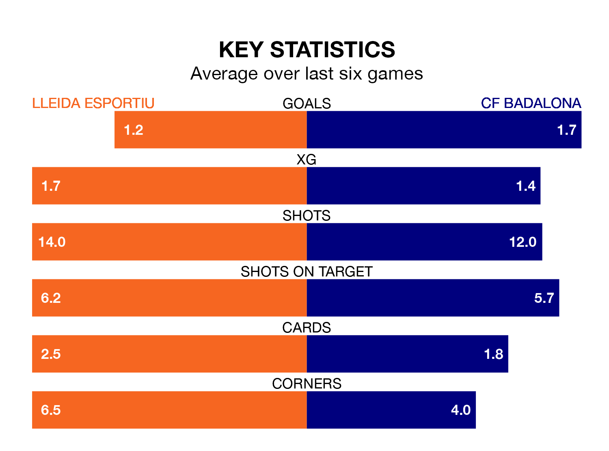

The Segunda División RFEF Group 3's top two sides face each other at Camp d'Esports de Lleida in Sunday's kick-off, when second-placed Lleida Esportiu host CF Badalona.
Lleida Esportiu have picked up 14 wins and three draws from 23 games so far this season, and sit on the same number of points as the visitors going into the 4pm match.
Badalona, meanwhile, have won 12 and drawn nine, picking up 45 points.
With 33 goals in 23 games so far this season, Lleida Esportiu are scoring more than average in the league with 1.4 goals per game. And they are conceding fewer than average, letting in 18 goals at a rate of 0.8 per game.
Badalona are also above average scorers, with 1.3 goals per game, compared to a league average of 1.2. They have conceded 0.7 goals per game.
In the last 10 years, Lleida Esportiu and Badalona have played each other on 20 occasions. Lleida Esportiu won eight of them, Badalona three, and they drew nine times.
On average, Lleida Esportiu scored 1.4 goals and Badalona 0.8 in those matches.
Their last meeting was on October 15, when they played out a 0-0 draw.
The home team are in mixed form in the Segunda División RFEF Group 3, with three wins and a draw from their last six games.
With four wins and two draws over that period, the visitors' form is better – they have taken 14 points from 18, compared to Lleida Esportiu's 10.
Lleida Esportiu's last match was on February 18, a 3-1 win against Peña Deportiva, with Sergio Montero Ortiz (two) and Juan Camilo Becerra Maya getting the goals for Lleida Esportiu.
Badalona beat Valencia B 2-0 last time out, also on Sunday, with Genar Fornés Casasús and Víctor Valverde da Silva on the scoresheet.
Updated: 12:18 (UTC), 19/02/24